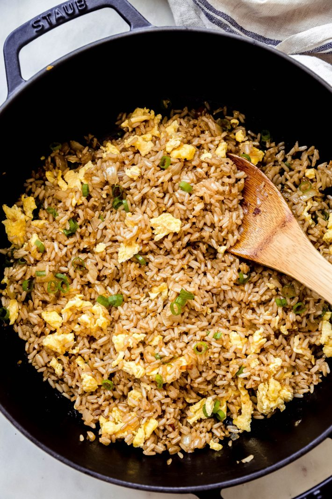

Simple Hibachi Fried Rice

Quick and easy hibachi fried rice recipe. It's easy to throw together to serve with sautéed chicken, steak, salmon, or shrimp! If you want additional vegetables, like frozen peas or carrots, feel free to toss them in!
Ingredients
- 3 cups cooked and cooled rice
- 1 tablespoon EACH: grapeseed oil (or avocado) AND butter
- 2 large eggs, lightly beaten
- ½ cup chopped onions (yellow or white)
- 2 teaspoons grated ginger
- 2 tablespoons low sodium soy sauce (or GF tamari)
- 1 teaspoon toasted sesame oil
- 1 scallion thinly sliced, for garnish
Directions
- EGGS: Heat a large dutch oven, griddle, or wok over high heat until hot. Add the oil to the pan and allow it to heat through. Add the eggs (lightly beaten) to the skillet and scrambled them in the pan quickly, breaking up any large pieces. Remove the eggs to a bowl and set aside for later.
- SAUTE: Add the butter to the skillet and allow it to melt. When melted, add the onions and cook them for 3-4 minutes or until softened. Add the grated ginger and give it 30 seconds before adding cooked rice and eggs back to the skillet. Stir everything to combine. Flatten the rice out into a thin layer and allow the rice to sizzle for 30 seconds untouched. Stir and then let sit again for 30 seconds. Alternating gives the rice time to heat through. You'll notice the rice starts to sizzle and pop in the pan.
- FINISH: Drizzle the soy sauce and sesame oil into the rice and allow it to sizzle and soak into the rice, stirring so it coats the rice evenly. When the sauce is absorbed and the rice is popping, it's ready to serve. Sprinkle a chopped scallion on top (if desired) and serve!